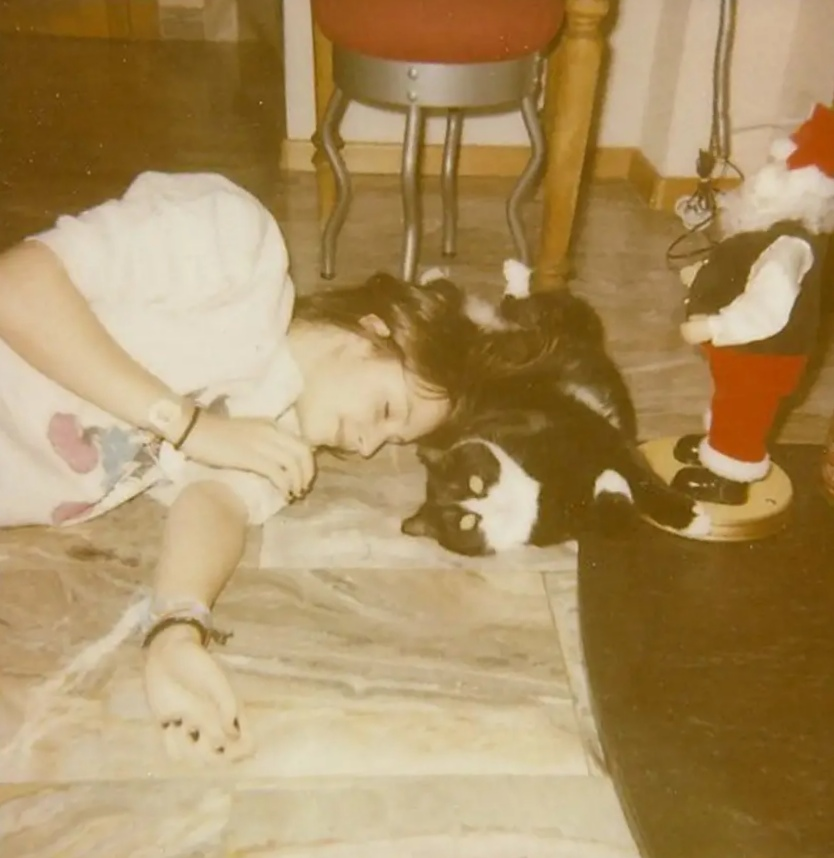
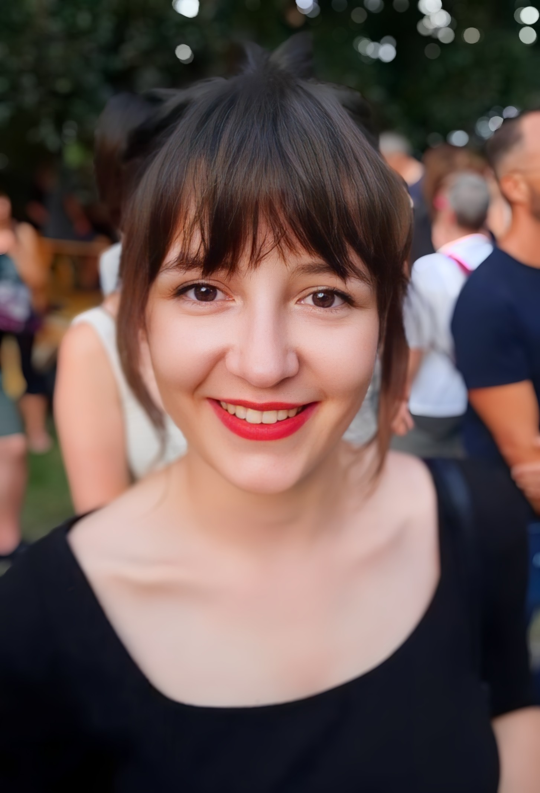
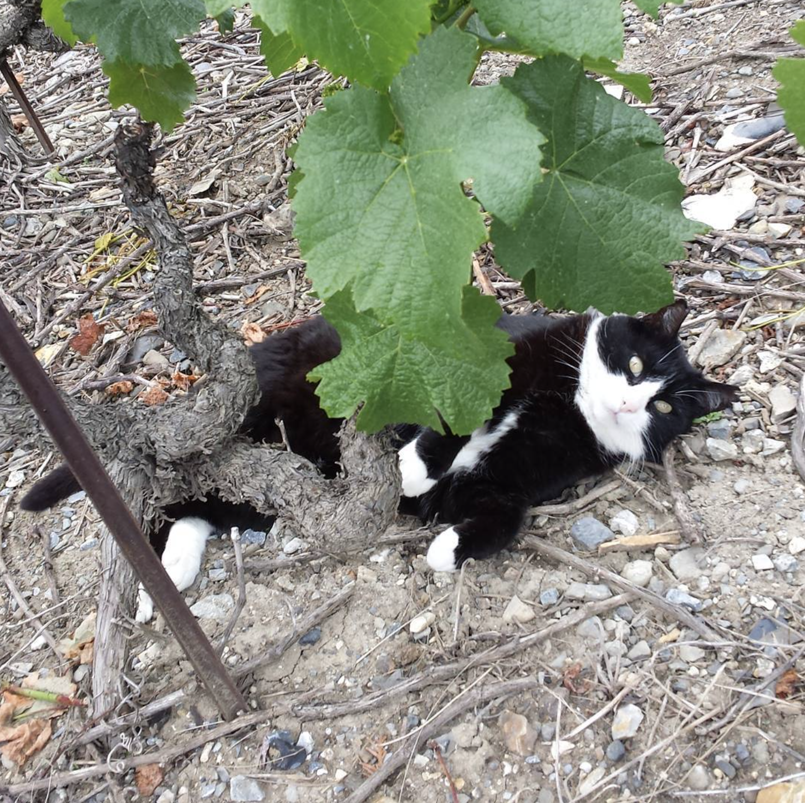
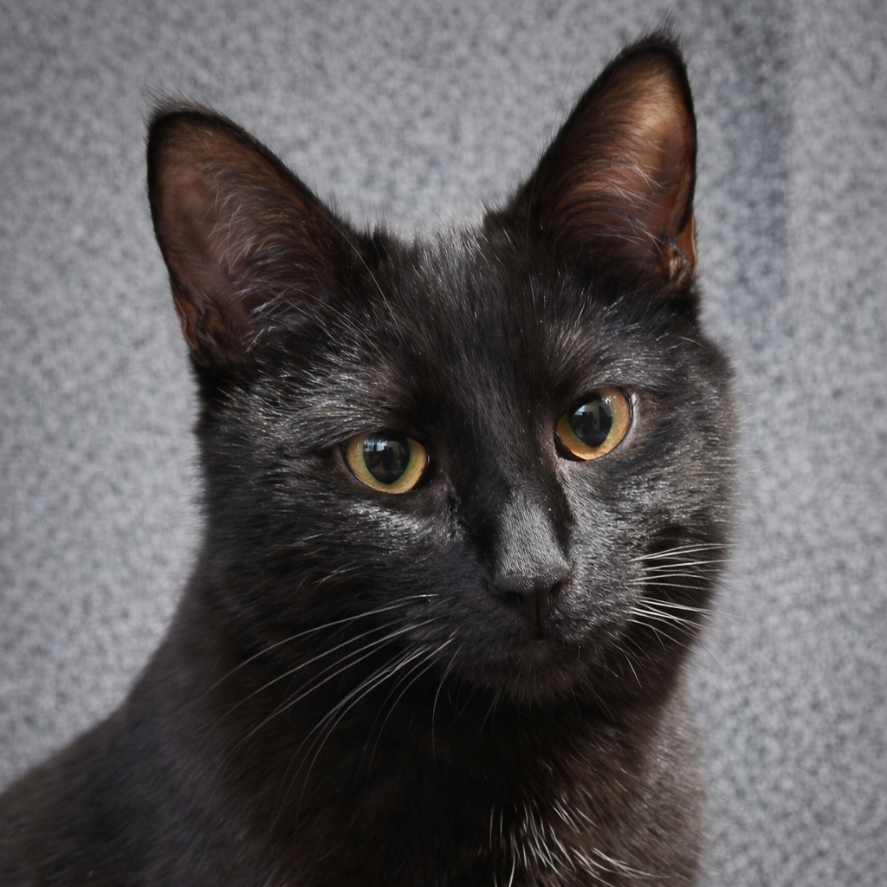
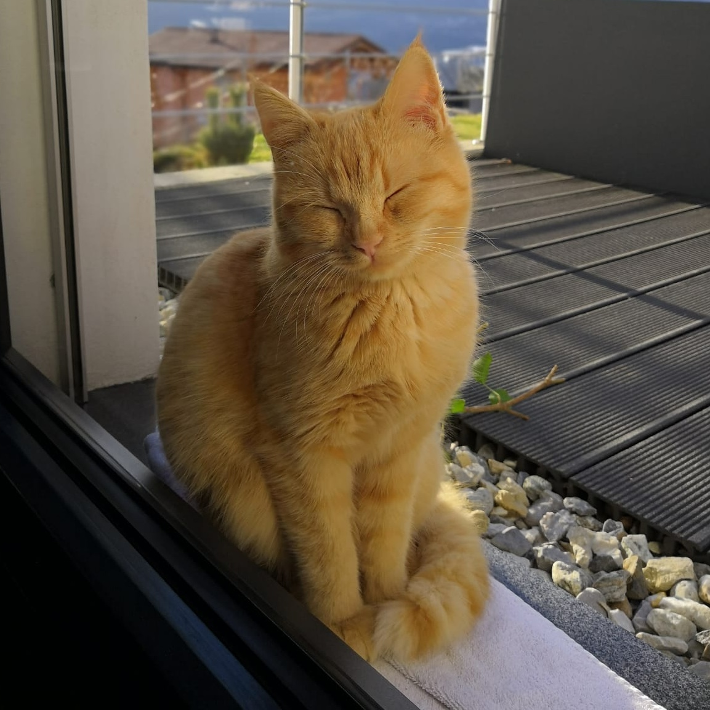

Welcome! This website offers an overview of my research, publications, and presentations, as well as information on how to contact me.
“Words, words, words.” (Shakespeare, Hamlet)
“Work, work, work” (Rihanna, Work)
I am a linguist specializing in derivational morphology, lexical semantics, and quantitative and computational methods. My work explores the complex relationship between form and meaning in the lexicon, with a particular focus on lexical ambiguity (including metaphor and metonymy), affix polyfunctionality (or 'polysemy'), and competition among derivational affixes.
I earned my Ph.D. in December 2024 from the University of Fribourg under the supervision of Richard Huyghe. My doctoral research examined ambiguity in French deverbal nouns using quantitative approaches.
I am currently a postdoctoral researcher at the University of Neuchâtel. From September 2026, I will be an SNSF Postdoc.Mobility fellow at the Universitat Pompeu Fabra under the supervision of Gemma Boleda (COLT group).
I have several manuscripts in preparation, including work on probabilistic approaches to lexical ambiguity, regional intensifiers in Swiss French, and the lexical database I contributed to during my Ph.D.
Salvadori, J.. L'ambiguïté des noms déverbaux en français : une étude quantitative du sens construit [Doctoral dissertation, University of Fribourg]. FOLIA - Fribourg Open Library and Archive. doi.org/10.51363/unifr.lth.2025.044
Huyghe, R., Salvadori, J., & Varvara, R. (Eds.) Semantic transparency in word formation [Special issue]. Morphology. link.springer.com/collections/fjaadajbgb
Salvadori, J. Des formes aux sens : l'influence des schémas morphologiques sur l’ambiguïté des noms déverbaux en français. Langue française, 228. doi.org/10.3917/lf.228.0145
Varvara, R., Salvadori, J., & Huyghe, R. Lexical ambiguity in contextualized word embeddings: A case study of nominalizations. Lingue e linguaggio, 1, 141-182. rivisteweb.it/doi/10.1418/112743
Huyghe, R., Barque, L., Delafontaine, F., & Salvadori, J. The ambiguous nature of complex semantic types: An experimental investigation. Language and Cognition, 4, 1079–1104. doi.org/10.1017/langcog.2023.73
Salvadori, J., & Huyghe, R. Affix polyfunctionality in French deverbal nominalizations. Morphology, 33(1), 1-39. doi.org/10.1007/s11525-022-09401-4
Salvadori, J., & Huyghe, R. D'une frontière à une autre: la délimitation aspectuelle dans le domaine nominal. Verbum, 45(2), 167-194. atilf.fr/Verbum_XLV_2023-2_01_Salvadori-Huyghe.pdf
Schwab, S., Mouthon, M., Jost, L. B., Salvadori, J., Stefanos-Yakoub, I., Ferreira da Silva, E., Giroud, N., Perriard, B., & Annoni, J.-M. Neural correlates of lexical stress processing in a foreign free-stress language. Brain and Behavior, 13(1), e2854. doi.org/10.1002/brb3.2854
Salvadori, J., & Huyghe, R. When morphology meets regular polysemy. Lexique, 31, 85-113. doi.org/10.54563/lexique.857
Salvadori, J., Varvara, R., & Huyghe, R. Measuring affix rivalry as a gradient relationship. In A. Bagasheva, A. Nagano & V. Renner (Eds.), Competition in word-formation (pp. 104-138). John Benjamins. doi.org/10.1075/la.284.04sal (preprint: folia.unifr.ch/unifr/documents/329831)
Huyghe, R., Lombard, A., Salvadori, J., & Schwab, S. Semantic rivalry between French deverbal neologisms in -age, -ion and -ment. In S. Kotowski & I. Plag (Eds.), The semantics of derivational morphology: Theory, methods, evidence (pp. 143-176). De Gruyter. doi.org/10.1515/9783111074917-006
Huyghe, R., Prudent, M., & Salvadori, J. (Eds.) Proceedings of the Fifth International Workshop on Resources and Tools for Derivational Morphology (DeriMo2025). University of Fribourg. events.unifr.ch/derimo2025/derimo_proceedings_2025.pdf
Varvara, R., Salvadori, J., & Huyghe, R. Annotating complex words to investigate the semantics of derivational processes. In H. Bunt (Ed.), Proceedings of the 18th Joint ACL - ISO Workshop on Interoperable Semantic Annotation (ISA-18) (pp. 133-141). European Language Resources Association (ELRA). aclanthology.org/2022.isa-1.18.pdf
Schwab, S., Mouthon, M., Salvadori, J., Ferreira da Silva, E., Yakoub, I., Giroud, N., & Annoni, J.-M. Neural correlates and L2 lexical stress learning: An fMRI study. In S. Frota, M. Cruz & M. Vigário (Eds.), Proceedings of the 11th International Conference on Speech Prosody - Speech Prosody 2022 (pp. 823-827). International Speech Communication Association (ISCA). doi.org/10.21437/SpeechProsody.2022-167
Salvadori, J., Barque, L., Haas, P., Huyghe, R., Monney, M., Schwab, S., Tribout, D., Varvara, R., & Wauquier, M. SONDE: The semantics of nouns derived from verbs in French. Annotation guide. github.com/semantics-deverbal-nouns/annotation_guide.pdf
Below is a selection of past talks. Feel free to contact me if you are interested in the slides!
Salvadori, J. L'ambiguïté des noms déverbaux en français : Une étude empirique et quantitative. Master's seminar in Natural Language Processing. University of Franche-Comté, Besançon, France.
Salvadori, J., & Huyghe, R. Affix polyfunctionality in French deverbal nominalizations. Morphology Reading Group, Laboratoire de Linguistique Formelle (LLF), Paris, France.
Lesage, S., & Salvadori, J. How intense are intensifiers? Experimental evidence of the degree expressed by intensifiers in French-speaking Switzerland. Paper accepted at the “s u u u u u p e r awesome patterns of iNtEnSiFiCaTiOn‼11eleven 😎 🤩” workshop at the annual conference of the Deutsche Gesellschaft für Sprachwissenschaft (DGfS), Trier, Germany.
Salvadori, J. Event, result, and beyond: A rule- and network-based approach to ambiguity in deverbal nominalization. 11th Workshop on Nominalizations/11èmes Journées d'Etude sur les NOMinalisations (JENom 11), Graz, Austria.
Salvadori, J., & Huyghe, R. The shape of meaning: A network analysis of ambiguity in French deverbal nouns. Word-Formation Theories VII & Typology and Universals in Word-Formation VI, Košice, Slovakia.
Huyghe, R., Salvadori, J., Varvara, R., Barque, L., Haas, P., Lombard, A., Monney, M., Tribout, D., & Wauquier, M. SONDE: A lexical database for exploring the semantics of verb-to-noun derivation in French. Word-Formation Theories VII & Typology and Universals in Word-Formation VI, Košice, Slovakia.
Salvadori, J. Morphology's hidden hand: Unpacking ambiguity in French deverbal nouns. 14th Mediterranean Morphology Meeting, Zadar, Croatia.
Lesage, S., & Salvadori, J. L’adverbialité en question : le cas des intensifieurs romands.. Colloque international - International symposium: L’adverbe et ses frontières - The adverb and its boundaries, Neuchâtel, Switzerland.
Varvara, R., Salvadori, J., & Huyghe, R. Creating and exploiting a lexical database of deverbal nouns in French. Biennial of Czech Linguistics/Bienále české lingvistiky, Prague, Czech Republic.
Salvadori, J., Varvara, R., & Huyghe, R. The semantics of conversion vs. affixation: Insights from nominalizations in French. Biennial of Czech Linguistics/Bienále české lingvistiky, Prague, Czech Republic.
Huyghe, R., Barque, L., Delafontaine, F., & Salvadori, J. The ambiguous nature of complex semantic types: An experimental investigation. XPrag.ch 2023, Fribourg, Switzerland.
Varvara, R., Salvadori, J., & Huyghe, R. BERT e la rappresentazione dell’ambiguità lessicale: uno studio sulle nominalizzazioni in francese. LVI Congresso Internazionale SLI (Società di Linguistica Italiana), Turin, Italy.
Salvadori, J., Varvara, R., & Huyghe, R. Quantitative measures of affix rivalry. 4th International Symposium of Morphology (ISMo 2023), Nancy, France.
Salvadori, J., Varvara, R., & Huyghe, R. Incidence- and abundance-based measures to assess rivalry in word formation. [Poster session]. 12th International Quantitative Linguistics Conference (QUALICO 2023), Lausanne, Switzerland.
Varvara, R., Salvadori, J., & Huyghe, R. Assessing affix polyfunctionality through BERT-derived representations [Poster session]. 20th International Morphology Meeting (IMM20), Budapest, Hungary.
Salvadori, J., & Huyghe, R. La polyfonctionnalité des suffixes formateurs de noms déverbaux en français. XXXe Congrès International de Linguistique et de Philologie Romanes (CILPR), La Laguna, Spain.
Salvadori, J., Varvara, R., & Huyghe, R. Measuring affix rivalry as a gradient relationship. Word-Formation Theories VI & Typology and Universals in Word-Formation V, Košice, Slovakia.
Varvara, R., Salvadori, J., & Huyghe, R. Annotating complex words to investigate the semantics of derivational processes. 18th Joint ACL - ISO Workshop on Interoperable Semantic Annotation (ISA-18), Marseille, France.
Salvadori, J., & Huyghe, R. Décrire la polysémie des noms déverbaux : critères et enjeux. 8e Colloque International Res per nomen : Polysémie et référence, Reims, France.
Schwab, S., Mouthon, M., Salvadori, J., Ferreira da Silva, E., Yakoub, I., Giroud, N., & Annoni, J.-M. Neural correlates and L2 lexical stress learning: An fMRI study. 11th International Conference on Speech Prosody (Speech Prosody 2022), Lisbon, Portugal.
Salvadori, J., & Huyghe, R. How many is many? The polyfunctionality of deverbal suffixes in French. 13th Mediterranean Morphology Meeting (MMM13), Rhodes, Greece.
Schwab, S., Mouthon, M., Salvadori, J., Ferreira da Silva, E., Yakoub, I., Giroud, N., & Annoni, J.-M. The relationship between brain activation during L2 stress processing, music aptitude and L2 stress discrimination ability. 10th International Symposium on the Acquisition of Second Language Speech - New Sounds 2022, Barcelona, Spain.
Salvadori, J., Huyghe, R., Lombard, A., & Schwab, S. The preservation of lexical aspect in nominalization: Insights from competing neologisms in French. 9th Workshop on Nominalizations/9èmes Journées d’Etude sur les NOMinalisations (JENom 9), virtual.
Huyghe, R., Lombard, L., Salvadori, J., & Schwab, S. Assessing the rivalry between French deverbal nouns in -age, -ion and -ment through the analysis of neologisms. 43. Jahrestagung der Deutschen Gesellschaft für Sprachwissenschaft, virtual.
I completed my Ph.D. in Linguistics at the University of Fribourg in 2024 (summa cum laude), under the supervision of Prof. Richard Huyghe. My dissertation, titled L'ambiguïté des noms déverbaux en français : une étude quantitative du sens construit, investigated the ambiguity of French deverbal nouns through quantitative methods. The dissertation committee included Prof. Fiammetta Namer, Prof. Olivier Bonami, Prof. Didier Maillat, Prof. Gilles Corminboeuf, and Prof. Richard Huyghe. I also hold an M.A. (2019) and B.A. (2017) in French and English from the University of Fribourg.
I am currently a postdoctoral researcher at the University of Neuchâtel, working with Mathieu Avanzi on Swiss French. From September 2026, I will be an SNSF Postdoc.Mobility fellow at the Universitat Pompeu Fabra in Barcelona, under the supervision of Gemma Boleda within the COLT group.
Previously, I worked as a research associate in experimental syntax at the University of Fribourg (2024-2025, supervised by Dr. Suzanne Lesage). During my Ph.D. (2020-2024), I contributed to an SNSF-funded project on the semantics of deverbal nouns in French, led by Prof. Richard Huyghe. I was responsible for the subproject on deverbal noun ambiguity and developed expertise in semantic annotation (semantic types, lexical aspect, semantic roles) and quantitative/statistical analysis.
Prior to my Ph.D., I worked as a research assistant in phonetics and neurolinguistics at the University of Fribourg (February-December 2020), contributing to a project on neural correlates of lexical stress processing in foreign free-stress languages, supervised by Dr. Sandra Schwab and Prof. Jean-Marie Annoni.
Since 2021, I have also served as the administrative and scientific coordinator of the CUSO Doctoral Programme in Linguistics, a doctoral program covering French-speaking Switzerland.
I have taught several courses and seminars at the University of Fribourg. From 2023 to 2025, I also served as an external examiner for the French Matura exams in the Cantons of Bern and Fribourg.
Alongside my degrees, I have developed additional skills through workshops and summer schools, including three ESSLLIs (officially for linguistics, unofficially for the food scenes of Galway and Ljubljana).
Implementing and Analyzing Experiments in PsychoPy and R, November 22, Universität Bern.
Praat pour les nuls et pour les spécialistes, September 7-8, Université de Neuchâtel.
Crowdsourcing linguistic annotations and experiments, September 4, Universität Bern.
34th European Summer School in Logic, Language and Information (ESSLLI), July 31-August 11, Univerza v Ljubljani.
Approches numériques des relations sémantiques: du lexique au corpus, November 28-29, Université de Neuchâtel.
Quelle place pour la variation sociolinguistique dans les données récoltées empiriquement ?, September 12, Université de Lausanne.
33rd European Summer School in Logic, Language and Information (ESSLLI), August 8-19, University of Galway.
Python4NLP, May 9-13, Université de Lorraine.
Quelles approches pour l’étude des français dits « régionaux » ?, November 11-12, Université de Fribourg.
Recent approaches to the quantitative study of language: Rules and un-rules, October 14-15, 2021, virtual.
Combining corpus and experimental data in linguistics, September 7, 2021, virtual.
32nd European Summer School in Logic, Language and Information (ESSLLI), July 26-August 13, virtual.
Le droit pour non-juristes (Quali+ Programme), 54 hours, Université de Fribourg.
Fifth International Workshop on Resources and Tools for Derivational Morphology (DeriMo 2025), September 4-5, University of Fribourg. Co-organized with Richard Huyghe and Megan Prudent.
Intensification et variation, November 20, University of Fribourg. Co-organized with Suzanne Lesage.
The semantic transparency of morphologically complex words, August 21-24, 57th Annual Meeting of the Societas Linguistica Europaea, Helsinki. Co-organized with Richard Huyghe and Rossella Varvara.
PhD Day, May 3, University of Bern. Co-organized with Baptiste Bersier, Sandrine Zufferey and Richard Huyghe.
R pour les linguistes, March 14-15, University of Fribourg. Co-organized with Richard Huyghe.
Linguistique et questions de genre : perspectives et enjeux, January 18, University of Neuchâtel. Co-organized with Aylin Pamuksaç, Loanne Janin and Corinne Rossari.
Python for linguists, June 22-23, University of Fribourg. Co-organized with Richard Huyghe.
PhD Day, April 17, University of Neuchâtel. Co-organized with Linda Sanvido, Aylin Pamuksaç, Corinne Rossari and Richard Huyghe.
Experimental approaches to meaning, October 6-7, University of Fribourg. Co-organized with Alizée Lombard, Ekaterina Tskhovrebova, Mathis Wetzel and Richard Huyghe.
PhD Day, May 6, University of Fribourg. Co-organized with Richard Huyghe.
I love cats. Click here to see some very cute kitties.



I'm a member of Foucoupe: we organize intimate live performances and produce videos to support contemporary music in Switzerland and beyond.
You can reach me at first-name.last-name@unifr.ch or @unine.ch.
I am currently based in Fribourg, Switzerland.